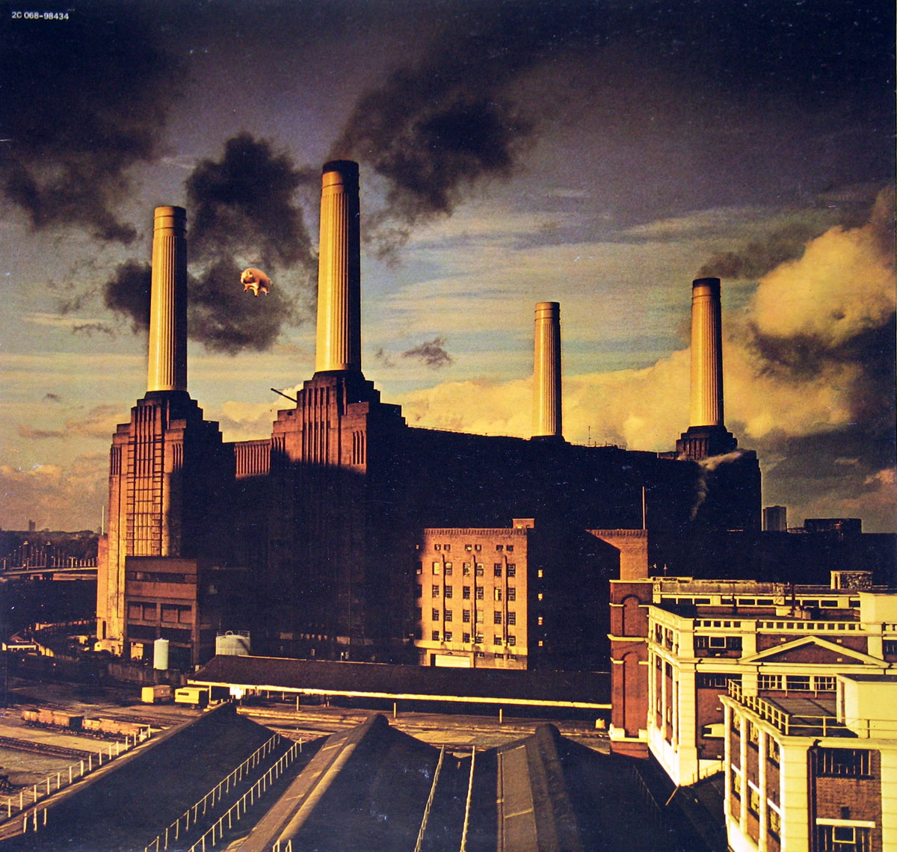

Album Summary:
Gatefold (FOC) cover design, This album includes the original thick
paper custom inner sleeve with album details, complete lyrics of all
songs by Pink Floyd
Album Production:
Roger Waters Pink Floyd Music Publishers Ltd 1977 , Engineerd by
Brian Humphries, Recorded Brittania Row Studios, London, Sleeve
design by Roger Waters, Inflatable Pig designed by E,R,G Amsterdam.
Animals was a new beginning for Pink Floyd and the
beginning of the end. After this, the band, in its most well-known
quartet format, would never officially exist again. Animals is the
album many diehard fans proudly proclaim as their favorite, that
contains none of the “money cuts” (pun intended) you grew up hearing
on the radio, back when radio was still a thing. It’s the album that
keyboardist/singer Richard Wright hates, for which guitarist/singer
David Gilmour often equivocates and
bassist/singer/principal-songwriter Roger Waters passionately
advocates.
*Jump in source page
It doesn’t take a psychology degree to see how or why each party
(diehards, casuals, individual band members) might arrive at their
take. Your feelings on Animals likely depends on your respective
stake. For Waters, it was the first time he became the lone songwriter
on a Pink Floyd album, save a sole co-writing credit from Gilmour on
“Dogs,” springing from an unfinished song originally titled “You’ve
Got To Be Crazy” from the Wish You Were Here sessions.
Animals is precisely 41 minutes, 41 seconds long. Yet it’s intense
enough to feel like 82 by the time it’s through. Animals is a concept
album that lists five animal-titled tracks, but it’s done a disservice
if experienced as anything other than one long song. If you start or
end anywhere but the two parts of “Pigs On The Wing,” without
listening in order to everything in between? You’re doing it wrong.
Pink Floyd had seen leadership and lineup shifts dating back to the
acid-aided breakdown of former leading man Syd Barrett. Barrett was
the band’s transmission during their early ascent, playing underground
rock clubs in swinging London during 1966 before signing their record
deal in 1967, with Barrett penning almost all the material on their
acclaimed debut, Piper at the Gates of Dawn. However, within months of
that initial success, Barrett’s regular LSD use combined with
undiagnosed mental illness resulted in him being, according to
bandmate Nick Mason, “completely detached from everything going on.”
Animals arrived either directly on the heels, or right smack dab in
the middle, of Pink Floyd’s critical and commercial apex. It depends
on who you ask. 1975’s Wish You Were Here, replete with its bookending
song-suite salute to Barrett “Shine On You Crazy Diamond (Parts I-V
and VI-IX),” sold twenty million records worldwide. And even that was
still considered a drop-off, critically and commercially, to the work
that preceded it: 1973’s The Dark Side of the Moon, one of the most
acclaimed and highest-selling albums of all-time, which to date has
sold forty-five.